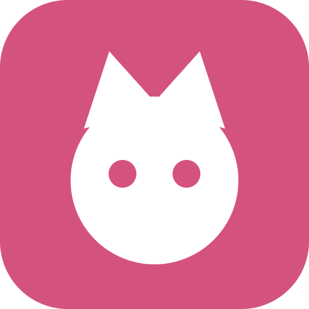

Kyu — это неофициальный фан-клиент для AniXart, а не официальное приложение. Проект не связан с командой AniXart и сделан энтузиастом. Все данные берутся из публичного API AniXart.
сделано с ❤️ вайбиком и claude-bro